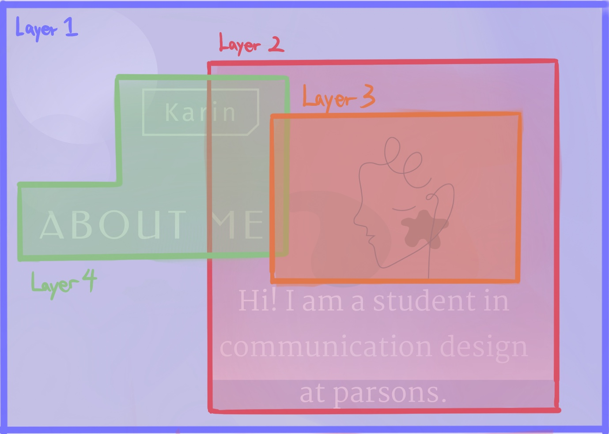
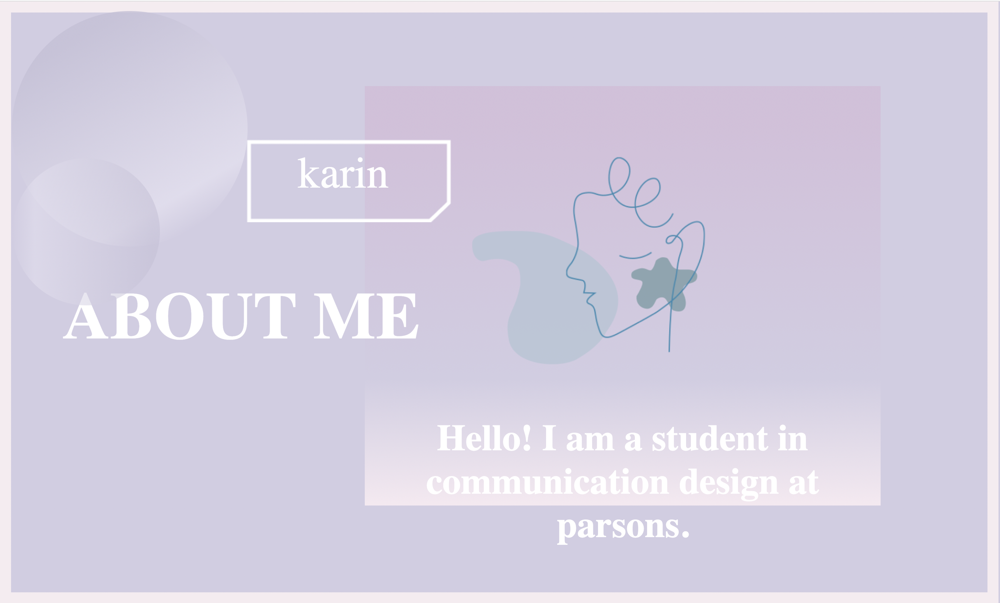

About
Page Design
My figma design
In this project, I designed a page about my own introduction in figma, a very helpful page design platform for website design and coding, and then recreate the page design using only codes. Through the data provided by figma, it is easier to code and create a website to achieve the desired effect.

I grouped all elements in the page by layers. For example, the text can be divided into a divider with the rectangle in the page. I then start with the background picture at the back, and then go to the picture, text and decoration to pave the elements layer by layer. The illustration in the figure is not written by the code, but the pattern I drew in sigma. I imported it into PNG format and directly put it into vs code.
This is the recreated version using codes:

Color gradient on shapes:
The gradient background color of thr retangle and circles in the page are written in code, by using a css color graident generator.
Conclusion:
Through this project, I learned to use the design of simulation page before writing
code to make it easier.
In addition, I also learned about the inspect function in chrome, which
is also a very helpful tool for making web pages.